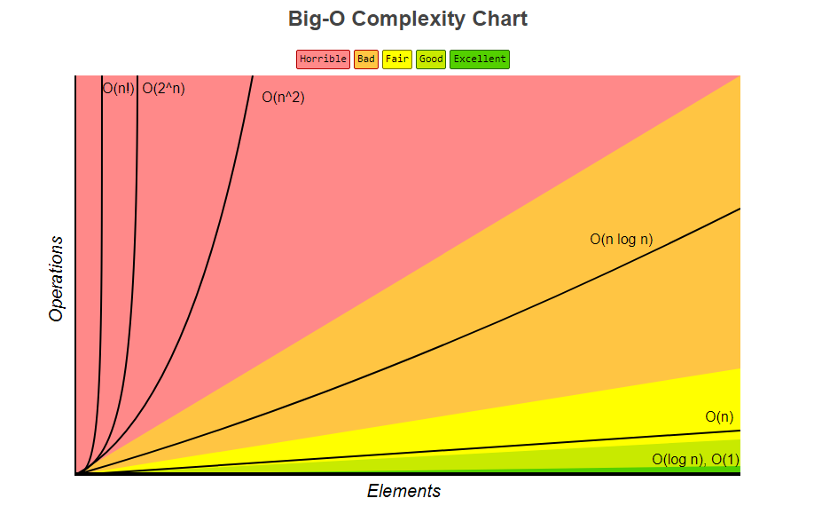
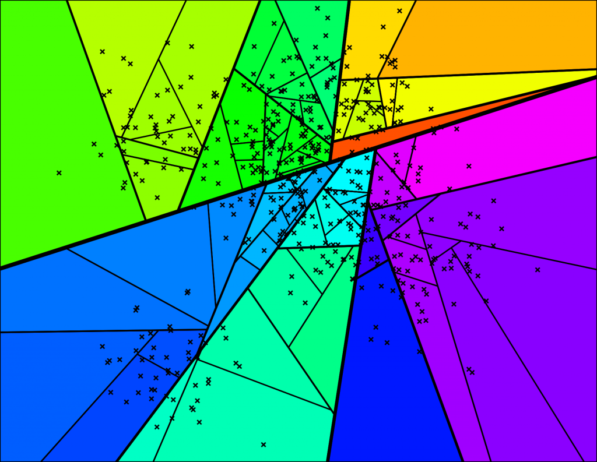
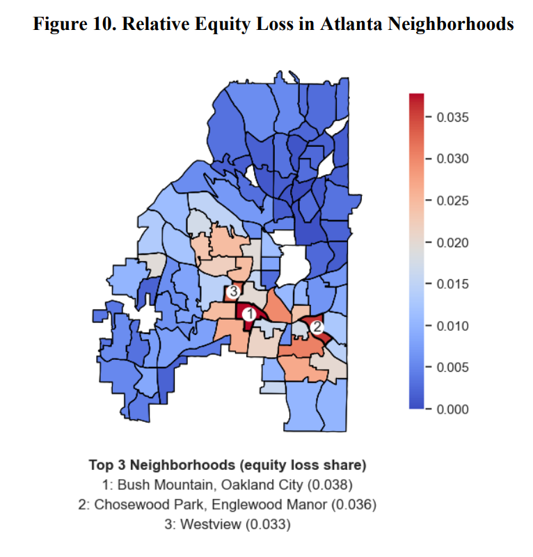

Methods to Identify Institutional Investors from Messy Data
_
Tradeoffs
Accuracy, runtime, and technical complexity
Accuracy
Choice to prioritize:
- Absolute number of matches
- Percent correct matches
- Percent true matches vs false matches
- Some combination of these criteria
In most situations, we want as many matches as possible and most of them need to be correct.
An ideal algorithm should be precise or otherwise invariant to minor changes in data format.
For instance, some data may contain street postfix abbreviations (e.g. “STREET” or “ST”) within the owner address whereas others will not.
Runtime
For practitioners, waiting days for an algorithm to run is not feasible, but it may be acceptable for researchers.
Access to computational hardware is also a consideration.
_
The marginal difference from category 2 to 3 is likely not worth the effort.
Technical Complexity
How difficult is it for a practitioner or researcher to reproduce the method?
_
This issue can be prevented with the creation of programmatic tools or applications that facilitate the use of these algorithms.
Time Complexity
Let us further analyze algorithm efficiency, otherwise known as time and space complexity. This will help us compare potential approaches later.
Quantifying Algorithmic Runtime
We can categorize algorithms with Big-O notation.
We write time complexity as O(f(n)) where f(n) is an upper bound function for the runtime of the algorithm given input of size n.
_
Runtime is not how long an algorithm takes to run on any individual computer, but rather the number of operations in the worst case.
We focus on how quickly the runtime of an algorithm grows with respect to its input size.
Common Big-O Functions

Time Complexity of String Comparisons
These comparisons are the building blocks of entity resolution algorithms
Vectorized Comparison (Equals Operator): O(1)
This is an exact comparison between two encoded values (in this case, strings). A computer can take two binary encodings from memory and compare them exactly with a single operation.
_
Similarity Metrics or Other Iterative Comparisons: O(n)
These are metrics that calculate a similarity score based on aspects of two strings. Many string distance metrics calculate the “distance” between corresponding letters in each string. This requires a comparison for each letter in the shortest string.
_
Time Complexity of Entity Resolution Algorithms
Aggreggate / GroupBy: O(n)
These functions utilize the same efficiencies of vectorized comparison by hashing values and placing them into blocks/buckets.
_
Similarity Threshold Grouping: O(n^2)
These functions typically compare each string to every other string using a similarity metric, grouping strings that are above a certain threshold.
Runtime may be improved with blocking or concurrency; OpenRefine’s clustering function appears to use an optimized implementation.
_
Time Complexity of ML Algorithms
K-Nearest Neighbors: O(n^2)
Finds k most similar vectors.
Approximate KNN: <= O(n)
Finds k most similar vectors, but trades guarantee of 100% accuracy with speed.
Deep Learning: Depends
Neural network trained on labeled data.

Current and Potential Approaches
Simple Address Key
In Uncovering Neighborhood-level Portfolios of Corporate Single-Family Rental Holdings and Equity Loss, our priority was to:
- Develop a simple method to quantify ownership scale
- Keep a narrow focus on research question
- Develop a method that is replicable by practitioners
It was not intended to identify specific corporate portfolios, but this is possible with an additional querying method.
Motivation and Design
Modified version of owner address
- Owner address has a lower potential for false positives
- Owner address is easier to standardize
- Owner name has more inconsistency amongst subsidiary corporations but many subsidiaries use the same address
Runtime complexity of O(n) due to vectorized address key.
Method Steps
- Exclude address string postfixes to avoid mismatches (e.g., “STREET” vs. “ST”).
- Remove periods, commas, and multiple spaces, and convert all characters to uppercase to eliminate inconsistencies.
- For PO box addresses, extract numbers from any address string containing at least one number and append them to “PO BOX”.
- Concatenate address number, address string (street name or PO Box), and zip code to create an owner address key.
Method Results
Findings
We utilized this method to create a straightforward framework quantifying equity loss from communities due to institutional investors.
Analyzed a an extensive dataset of parcel and sale records from 2010 to 2022, revealing:
- $1.25B in lost financial equity in Atlanta’s neighborhoods.
- Concentrated in predominantly African American neighborhoods.

Querying
Due to the possibility that the same corporation may use multiple addresses, the address key method is not intended to robustly describe the portfolios of specific corporate owners.
However, it can be done with querying.
_
Code Example
Code Example (Python)
# Keywords to query for each owner
# For short strings, like "IH" that might accidentally appear,
# a space is added to reduce this possibility.
owner_keywords = {
"Amherst": ["AMHERST", "ARVM"],
"Cerberus": ["CERBERUS", "FKH", "RM1 ", "RMI "],
"Progress": ["PROGRESS", "FYR"],
"Invitation": ["INVITATION", "IH "],
"Colony": ["COLONY", "STARWOOD", "CSH", "CAH "],
"Sylvan": ["SYLVAN", "RNTR"],
"Tricon": ["TRICON", "TAH"]
}
# Query for each owner described above
for owner in owner_keywords:
query_str = "|".join(owner_keywords[owner])
# Find rows for TAXYR 2020 and where at least one associated name
# contains a keyword matching the owner
owned_by_given_corp = owner_scale[
(owner_scale["TAXYR"] == 2020)
& owner_scale["assoc_owner_names"].apply(
lambda x: any(((re.search(query_str, name)) for name in x)
))
]
# Only retain matched subsidiary owners over a threshold,
# this is to prevent false positive matches. For instance,
# if a single parcel was owned by someone with the last name "SYLVAN"
owned_by_given_corp = owned_by_given_corp[
owned_by_given_corp["count_owned_fulton_yr"] > 49
]
# Sum total over all matched subsidaries
total_owned = owned_by_given_corp["count_owned_fulton_yr"].sum()Result of Query
Advanced Address Key
Issues with Simple Address Key:
- May struggle on differently formatted data. For instance, if address postfixes or suite numbers are included.
- Other minor inconsistencies that are impossible to clean like spelling or word order.
_
The simplest form of an Advanced Address Key extracts and concatenates:
- Address number
- Suite number
- Zip code
- Last two letters of the longest substring in the street address
These features are almost always invariant to changes in spelling, word order, street postfixes, or other inconsistencies.
Advanced Address Key Example
Potential Improvements
Business Registry Data
Not included by default since this data may vary by state or be inaccessable.
- If available, could aggregate same-owners that use multiple addresses with name matching.
- Matching owner names to business names has the same challenges of spelling and naming inconsistencies.
- Ideal case is that the registry contains owner, or beneficial, corporations and their addresses. This could aggregate subsidiary addresses and names at the state level.
Regardless, considering data inconsistency, matching even good data from business registry records to parcel or sales records requires the use of fuzzy matching algorithms discussed here.
Crowdsourcing Rental Registries
Using an address key querying approach, we’ve demonstrated that how to construct a list of owners associated with a business address.
_
If researchers complete this step within their own metro areas, we can combine this data to create a robust, crowdsourced ownership database.
This database may consist of two tables, one linking address keys to an owner index, and another linking owner indexes to all associated corporate names.
Example Database Schema
Appendix C of Polimeni and An 2024 contains this data for Fulton County, GA.
Drawbacks of String Similiarity and ML
String Similarity
- Generally inefficient
- Potentially difficult to use or understand
- Prone to false positives
For instance, “2018 3 IH BORROWER LP” and “HOME SFR BORROWER IV LLC” have many letters in common, but they are different entities.
ML Approaches
Clustering
Clustering requires that the data can be vectorized. We can encode owner names string into vectors using a string embedding model. However, these models are generally intended to encode semantic meaning. They are not useful for identifying strings that look similar.
Deep Learning
Deep learning requires a correct, labeled dataset to train on. This takes additional effort to create. Furthermore, there are many instances of subsidiary corporations with no discernable pattern.
Conclusions
Is This a Solvable Problem?
Ultimately, the problem is solvable from a computational perspective (there exists a polynomial time algorithm), but it is not perfectly solvable from a data perspective.
_
An impossible problem: when owner names and owner addresses are different but they represent the same corporation.
For instance, how is it possible that any algorithm or model can correctly classify “Jeff 1 LLC” as a subsidiary of Amherst Capital if the owner address is different?
There are no string distance metrics that will resolve this issue and no discernable pattern for deep learning.
What is the Best Solution?
It is not worth the time to aim for a perfect solution.
_
The best solution is likely an optimized fuzzy address key, coupled with additional data steps to aggregate specific portfolios.
This solution finds an ideal balance between accuracy, runtime, and implementation complexity. Additionally, it generally avoids false positives, which is ideal for most purposes.
A Methods Paper to Reduce These Challenges
To reduce the burden on researchers and increase the speed at which the impact of SFR investment can be studied, a methods paper should concretely compare all current methods.
Questions?
More information at: nicholaspolimeni.com/posts/methods-sfr/